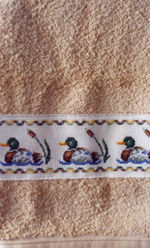
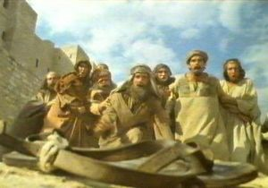
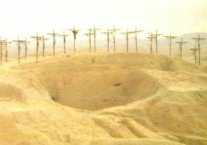

Armilla
 De: La Frikipedia, la enciclopedia extremadamente seria.
De: La Frikipedia, la enciclopedia extremadamente seria.
| De la serie ciudades del mundo:
|
| Armilla
|
| 
|

|
| (Bandera)
|
(Escudo de armas)
|
|
| Topónimo oficial
|
Donde nació la Rosa de Espiña
|
| País
|
República Checa
|
| Código postal
|
4815162342
|
| Superficie
|
sí
|
| Altitud
|
Así a ojo, 13,14 metros
|
| Distancia
|
42, y no se hable más
|
| Fundación
|
1204 con la fundación del Don Pepe
|
| Población
|
Canis, viejos y helicópteros
|
| Gentilicio
|
Armillereños o Armillanos
|
| Alcalde
|
Gregory House
|
«Antes to esto era vega»
~ Cualquier honorable anciano armillero señalando cualquier parte del pueblo
El que posiblemente sea el pueblo con el nombre más soso del almácigas y sus fábricas de mierda en lata. La principal función actual del municipio es mayormente construir edificios ilegales, mañana puedes despertarte y encontrate un bloque de 12 pisos en el hueco donde asta entonces había un hermoso ciruelo.
Historia
 Los primeros habitantes de Armilla observando atónitos la chancla de Jesús
Cuenta la leyenda que en el 485A.C, Jesucristo perdió su chancla izquierda en Armilla al dirigirse a tomar unas merecidas vacaciones a Almuñécar después de resucitar a Lázaro, es por eso que el sitio donde se encuentra la chancla ha sido considerado un lugar sagrado por todas las culturas que han pasado por allí, lo que provocó diversos conflictos y guerras para obtener la ansiada reliquia, hasta el año 1204, cuando en ese mismo lugar aparece Beakman, el cual estaba haciendo las primeras pruebas con su máquina del tiempo y mientras elucubra los cálculos necesarios para volver a su tiempo funda el primer y único puticlú de Armilla, el Don Pepe, alegrándole la vida a los aburridos lugareños que lo veneraron como a un dios hasta la llegada del cristianismo en el año 2006.
La vida en Armilla

Foto tomada a las puertas de un instituto armillero a las 8:25PM.
Todo empieza a la salida del sol por la hermosa cordillera de Sierra Nevada y el dulce cantar de las máquinas quitamierdas y los helicópteros, que son capaces de pasar por el mismo sitio (normalmente la puerta de tu casa) 80 veces sin descanso.
Hasta esa hora solo hay viejos en bicicleta, pero sobre las 8:00 PM huyen despavoridos a sus casas, pues las juventudes armilleras (98% de canis garantizado) se dirigen un día más, jugándose la vida, a uno de los colegios o institutos ubicados en este maravilloso pueblo. Es entonces, en el momento en que todos los chaveas están haciendo como que atienden en sus respectivas clases, cuando los vejetes asoman tímidamente la cabeza por sus puertas y toman de nuevo las calles para realizar sus actividades rutinarias, como, comprar el pescao, jugar al dominó, ir a la iglesia, mirar las obras, o hacer planes para dominar el mundo. A las 14:00PM o 14:30PM, hordas de zagales hambrientos vuelven a tomar las calles dirigiéndose a sus respectivos hogares para media hora después ponerse a jugar a la Play Station o a alguna de las 4 consolas que hay por persona. Hacia las 20:00PM, los adolescentes salen de botellón y la máquina quitamierdas vuelve a despertarte.
Lugares de interés
 Las tres cruces en el año 4D.C
- Plaza de las Tres Cruces: El verdadero lugar donde crucificaron a Cristo al volver de sus vacaciones de Almuñécar. Actualmente solo es una plaza con bancos donde los abueletes hacen sus planes de dominación mundial, en su centro hay tres cruces bien hermosas de piedra a cuyos pies la gente pone velas con fotos de Fray Leopoldo (Que en Granada es como Superman) y flores, todo esto está protegido por una gran alambrada de medio metro. La principal actividad aquí es escupir a ver quién apaga más velas (se han llegado a hacer apuestas millonarias).
- Polideportivo: Lugar donde además de diversas pistas de baloncesto, furbo y tenis podemos encontrar el equivalente al camino de Santiago: "La vuelta del Colacao", un circuito que lleva ahí desde los tiempos en los que los Manuel Fragas campaban a sus anchas por todo el mundo y una ardilla podía cruzar España de punta a punta saltando de un árbol a otro. El circuito tiene forma ovalada y se encuentran varias pruebas a lo largo del recorrido tales como:
- Levanta el madero:Consiste en coger un cacho de madera y levantarlo.
- Salta de madero en madero:En esta prueba hay que saltar varios maderos con una gran variedad de tamaños que forman un circulo de 1 metro de diámetro.
- Haz abdominales en los maderos:Te apoyas en los maderos y haces los abdominales.
Todas estas pruebas fueron realizadas tras la gran producción maderera de 1807 y cada una tiene un dibujito con la explicación de como hacerlo correctamente.
- Las iglesias: Hay dos: La nueva y la vieja (Para que no haya confusiones). Son edificios altos y grandes con unas cruces encima y campanas adornando las torres, cada hora, cuando hay misa, cuando se casa alguien o cuando se muere el papa suena un cassette con grandes éxitos campaniles de ayer y de hoy alegrándole la vida a los vecinos que vivan en las proximidades. En el interior hay unos bancos puestos todos en fila, muchas columnas, ventiladores de la posguerra que no funciona la mitad y altavoces, que tampoco funcionan la mitad. Cada domingo los viejos se ponen sus más brillantes dentaduras y sus más nuevos trajes con hombreras para acudir como zombies a escuchar a un gordo disfrazado soltarles un discurso que no entienden, a toser y a comer una especie de patatas fritas de bolsa sin ondulación, pero blancas que no se pueden masticar porque es pecado y que por lo tanto se te pegan al paladar de un modo ciertamente molesto, derritiendosete poco a poco hasta que tienes que meterte el dedo en la boca para raspar (una imagen muy típica de la misa es ver a todos los viejos quitarse la dentadura postiza para deshacerse de esa patata blanca maldita) , pues de lo contrario podrías morir.
- La plaza del ayuntamiento: De reciente inauguración consiste en una gran superficie de cemento con bancos (en Armilla hay bancos en todas partes, de hecho aquí nació el inventor del banco de sentarse: Marcelino Montilla) dispersos por toda la plaza donde los canis y vejetes se sientan todos juntos a admirar la grandiosa estatua llamada "La Venus de Armilla" mientras cantan todos felices la sintonía de los Serrano. En verano, cuando se alcanzan temperaturas de más de 65º a la sombra (Ver el apartado Clima Armillero) resulta imposible ver a ningún ser vivo pasear o simplemente acercarse a la plaza, dada la ausencia de cosas que den sombra como árboles o dinosaurios, lo único que más o menos puede dar sombra son una especie de parrillas de barbacoa gigantescas oxidadas y en posición vertical (El alcalde diría:"Para qué vamos a plantar verdes y lustrosos árboles cuando podémos gastarnos medio millón de euros para que un afamado ingeniero escultor y artista que lo conocen en su casa a la hora de comer nos haga especie de parrillas de barbacoa gigantescas oxidadas y en posición vertical").
- La piscina municipal cubierta: De techo rojo y resbaladizo suelo, esta ubicación se caracteriza por las incómodas situaciones que se dan dentro de ella, veámos un ejemplo: Evaristo López, ciudadano Armillano de veinte años que vive con sus rabadilla. La caída ha sido de esas a cámara lenta por lo que a todo el mundo le ha dado tiempo de girar la cabeza para ver como Evaristo López, de 20 años se dispone a tomar tierra con un ridículo gorro de silicona apretándole las sienes mientras mete barriga y saca pecho. Una vez superado el golpe, sonríe y anda saludando como si no hubiera pasado nada secándose una lagrimilla que se le resbala por la mejilla mientras piensa para si mismo "estos se van a cagar". Se coloca en el borde de la piscina, se agacha, salta, y se introduce limpiamente en el hagua, un salto de cabeza perfecto, se hace un largo sin respirar ni nada como los machotes y una vez acabado observa que todo el mundo le mira de nuevo "Gracias, gracias público" dice orgulloso de su gran hazaña, acto seguido nota un singular frescor debajo del ombligo, una gota de sudor frío recorre lentamente el cuello de Evaristo, despacio mira hacia abajo y después hacia el frente, 25 metros más allá su bañador flota alegremente (¡Recordad chavales ataros los cordones del bañador antes de hacer cualquier pollada si no queréis acabar como Evaristo!). Cuando todo vuelve a la normalidad, nuestro alegre protagonista se dispone a hacerse unos cuantos largos probando los diferentes estilos, estos son los resultados:
- Mariposa: No se puede nadar a este estilo dada la estrechez de las calles, pues puedes escogorciar a alguna vieja de esas que nadan con los churros de colores o escoñarte tu mismo al dar con alguna extremidad en las corcheras.
- Braza: Véase mariposa.
- Espalda: El inventor de este estilo se debió de quedar agusto y satisfecho, vas bocarriba y no tienes ni la más remota idea por dónde vas, consecuentemente te chocarás con una vieja que nada con un churro de esos de colores y te entra al menos un litro de agua por la nariz.
- Croll: El único estilo nadable en la piscina municipal de Armilla (Contando también el estilo de las viejas con un churro de esos de colores).
Así que estuvo una hora entera nadando a croll, sufriendo las patás en los cojones de los putos niños güevos (que en las piscinas solo sirven para eso) y las insinuaciones de las numerosas viejas que nadan con un churro de esos de colores. Cansado, sale del agua, entra en los vestuarios, se ducha evitando mirar el grotesco espectáculo que es ver a honorables ancianos con pelos por todas partes menos en la cabeza enjabonarse mientras hablan de Fernando Alfonso, se viste y huye como alma que lleva el diablo.
Todo lo que le ocurre a Evaristo está en vuestra imaginación, en realidad la tele estaba apagada y esto es Matrix, pero está científicamente comprobado por científicos alemanes de la Universidad autónoma de Wisconsin, Massachusetts, que al menos dos de las cosas que le han pasado al personaje te ocurrirán a tí si se te ocurre pasarte por allí.
- La vega: Lugar donde se puede observar el hábitat de los últimos viejunos campestres Armilleros. Se dirijen cada día allí en su medio de transporte favorito: La bicicleta con bolsas del Mercadona de misterioso contenido detrás. Y una vez allí observan el crecimiento de los olivos, las lechugas o los tomates y conversan animadamente sobre olivos lechugas y tomates.
- Comercios: Se distinguen tres comercios importantes dentro de lo que es el pueblo en sí:
- El Dani: Supermercado donde se compra la fruta y la verdura.
- El Mercadona: Supermercado donde se compra lo que no es fruta y verdura.
- El Spar:Supermercado que da sus últimos coletazos antes de la muerte causada por el Mercadona (Anteriormente la gente compraba ahi lo que no es fruta y verdura).
- El Arenas: Sitio de encuentro de este equipo futbolistico que nos representa.Este lugar cambió cuando frabricaron el campo de cesped (artificial, claro).Antes todos se juntaban en er Arenas sea para futbol, baloncesto, tirarse globos de agua o sentarte en el bordillo a comer pipas mientras veias a los demas individuos hacer lo anterior mencionado, pero, al cambiar todo aquello, la gente empezo a cambiar su punto de encuentro al polideportivo.
Clima Armillero
En verano hace un calor que te torras y en invierno hace un calor que te torras pero menos.
Tribus Urbanas
- Canis: Son la mayoría de la población armillense y se pueden distinguir en manadas de 300 o 50000 personas u/o animales de compañía como urones to reshulones.
- Yolas: Igual pero en tías (ya está)
- Rumanos: Pueblan la zona norte y se les distingue porque hablan diferente y te miran raro.
- Cowboys: Son sin duda la tribu más gansta de todo el país andaluz y se dedican a marcar el paso básicamente junto a más cowboys.
- Raperos: Se caracterizan por ir al imperio del Polideportivo a hechar unas canastas y hechar batallas de gallos, entre los que destaca el Viejo de la Vega.
- Pijos: Esta tribu la compone el 95% jugadores der Arenas y el otro 5% gente que intento entrar y no pudo.Tambien se alternan con los canis antes mencionados.
- Ausentes: Esta especie esta ausente, sabes que estan pero no los ves.
Autor(es):
- Nexo
- Pancracio
- MURO DE AGUAS
- Frikiman
- Plasnisk
- ArreKarallo
- Anticowboy
- Quepasa
- Granadino
- Gñapero Solitario
Frikipedia 2005-2016, Licencia
GFDL 1.2 - Extraído por FrikiLeaks